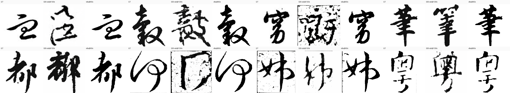
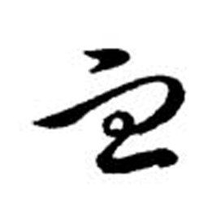
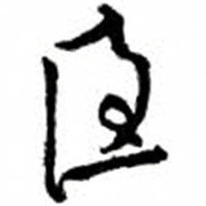
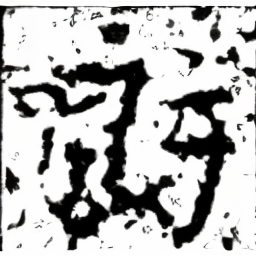
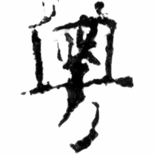
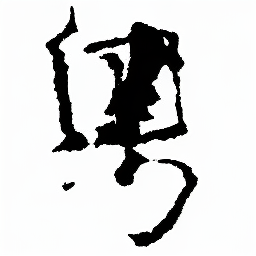
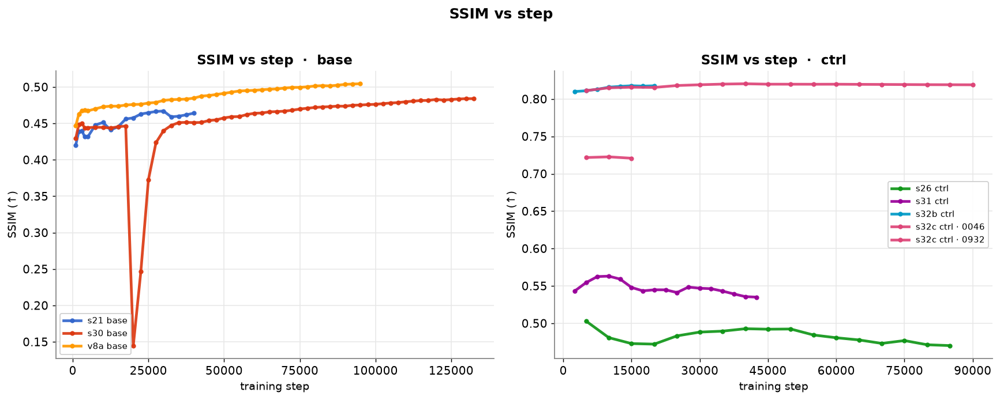
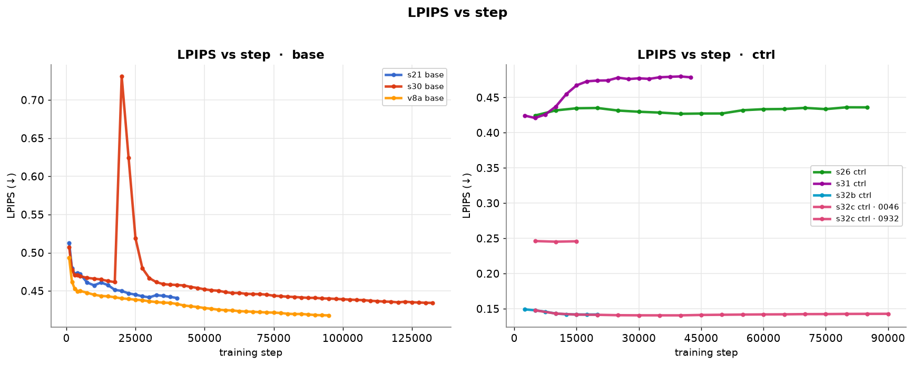
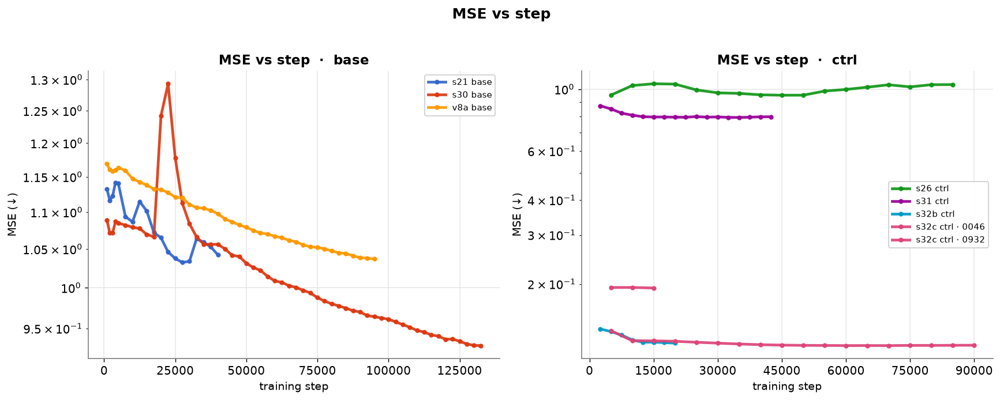
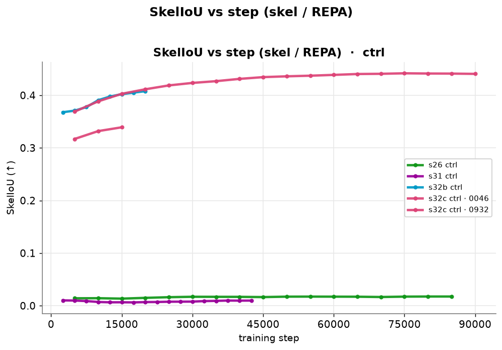

数据全部来自：远程实验结果目录、eval_auto_*.json 实测、docs/system 01-29 文档、 _ot_scratch 脚本时间线、conda env 实况。口径说明：SSIM 跨数据集不可比（ 11 书家 0.73 ≠ 44 书家 0.47），同口径才可比。
v8a 基模（新，清洗数据 + batch432 + OT-chunks4 + compile + cu121）：
| step | v8a ssim | mse | lpips | 旧S30 ssim(同step) |
|---|---|---|---|---|
| 80k | 0.5015 | 1.044 | 0.420 | 0.472 |
| 90k | 0.5037 | 1.039 | 0.419 | 0.474 |
| 95k | 0.5045 | 1.037 | 0.418 | 0.474 |
| 100k | 0.5061 | 1.030 | 0.417 | 0.476 |
| 时间 | 实验 | 改动 | 结果 |
|---|---|---|---|
| 08-10→14 | V1/V2 | DiT-S/2 + 3因子(callig×script×char)联合MLP，全量从零 | ❌ 3因子不组合（script与callig混淆，覆盖0.264%） |
| 时间 | 实验/改动 | 改动内容（模型/infra/数据） | 结果/有效性 |
| --- | --- | --- | --- |
| 08-10→14 | V1/V2（背景） | DiT-S/2 + 3因子(callig×script×char) 联合concat MLP，全量从零，无EMA/无结构损失 | ❌ 3因子不组合（script与callig混淆 I=1.527bits，triple覆盖0.264%） |
| 08-15 | exp_s_5script 终止 | legacy 联合MLP 36.16M 停于25.7k步（best≈10-15k，20k后回归） | ❌ 只能记忆稀疏triple → 转因子化 |
| 08-15 | compositional V1（=s2 因子化3cond） | callig128+script32+char192 factorized_add→384；4-way CFG(75/10/15)；factor-balanced采样；EMA 0.9999+warmup；b224；全量147,841行 | ✅ 组合泛化成立，best@20k SSIM 0.4576（1004书家口径） |
| 08-15 | compositional V2 latent结构损失 | V1-20k续训 + latent Canny 0.05/Skel 0.005（max_t=500）4k步 | ❌ SSIM 0.4503 更差 |
| 08-15 | v3a 二因子glyph 从零 | script×char→glyph_id(35,130类)；DiT-2Cond-S/2 39.58M，callig128+glyph192 factorized_add，4-way 60/15/15/10 | ⚠️ 早期短跑（best step≤25k）；v3b_xl_glyphcond SSIM 0.4888 |
| 08-16 | s2_fromscratch_2factor | 2因子从零，kailishu 单书体（447书家/4,933字） | ✅ SSIM 0.5773（447书家口径历史最佳） |
| 08-16 | V3-B/C XL + 空间glyph条件 | DiT-2Cond-XL/2 + 标准字形latent空间条件（Conv2d→token-add，learnable scale 0.4） | ✅ 空间glyph条件有效；❌ XL过杀 → 回S尺寸 |
| 08-17 | latent vs pixel 结构探针 | latent canny/skel 信号≈pixel（分开度1.048 vs 1.041），字级判别力弱 | ⚠️ latent结构仅可作辅助 |
| 08-17→20 | S5 结构损失系列 | top30 128,842张 latent-cached；pixel/latent canny·skel 变体 | ❌ pixel结构损失有害：彩色噪声，X0Lat 36–39 vs diff-only 1–2.5；diff-only@70k 0.520 |
| 08-20→22 | S6 受控 diff-only vs struct | 同数据 top6 10,866张对照；eval500修复（character_id越界剔除146） | ✅ diff-only@195k 0.732 ≫ struct@120k 0.403 → 纯diff-only |
| 08-22 | S7 ramp 结构损失斜坡 | 20k步内结构损失权重 0→斜坡 | ❌ 无效、伪影复发 → 彻底弃结构损失 |
| 08-23 | S7 kl-f4 VAE换代 | sd-vae(f8,83.7M)→kl-f4(f4,55.3M)：地板噪声2×低(0.0019 vs 0.0037)、latent信息3×；DiT-S/4保持256 tokens；b224 bf16 EMA | ✅ 采纳（s7_klf4_top30 0.5090，108书家） |
| 08-24 | s10 b4 灰度清洗 | 灰度+清洗数据短跑 | ⚠️ 0.4656@55k，未成主线 |
| 08-25 | s12_3top30_dino | 3top30 + DINO字形嵌入（ddpm），latent时代开端 | ⚠️ 0.4888@60k（67书家） |
| 08-26 | s13/s14 DiT-XS | 3top30 XS ddpm 减参尝试 + 原始数据对照 | ❌ s12/13/14系整体放弃（减参非根因） |
| 08-25/26 | S12/S13 根因修复 | 减参 + 去proj + DINO 384 LN-only 冻结表直通 + eval500重建 | ✅ 条件变纯语义向量（S13起验证） |
| ≈08-27 | s15_ws_flow 宽体flow | WS/2 宽体 + flow（195k步，67书家） | ⚠️ 加宽仅+0.004（同口径） |
| ≈08-27 | s17_s_flow | S/2 flow 3top30（165k步） | ✅ 0.5325（eval500_3top30） |
| ≈08-27/28 | s18_s_flow_small 首个flow | Flow Matching 预训练（Euler 50步，cfg1.7），top6小数据 | ✅ flow取代ddpm（更少步数超s6），0.5476 |
| 08-28 | 核心代码重构 | src/{model,loss,train,eval,utils} 分层 + 统一时间步采样（修 flow/randint t∈{0..49}→t*1000 OOD bug） | ✅ infra根治ControlNet类bug |
| 08-28→29 | s19_midclean_s_flow | mid-clean（每组合6样本增广）+ 4-way dropout which_glyph=0.75 + flow；S/2 33M b240 | ✅ 旧架构末代 0.5222（midclean口径） |
| 08-29 | v2 架构现代化（→s20） | RMSNorm/SwiGLU/2D axial RoPE/QK-Norm+SDPA/自写PatchEmbed；flow: logit-normal t + Heun二阶 + shift；修6个静默污染bug；ControlNet重写 | ✅ s20 新基模 0.5294（cfg1.7）；SwiGLU显存翻倍→no-ckpt b128 |
| 08-29 | DINO 条件实测 | CLS有效秩 34.1/384，跨书体检索top-1仅1.9–2.6% | ⚠️ 条件信息量不足实证 |
| 08-29 | 旧实验归档清理 | 77 run扫描、66 run清理释放~882GB；确立口径分代 | ✅ infra |
| 08-30 | s21_fame_flow_v2 主力切换 | fame 51,322张/44书家/4,765字/7书体 + 真迹DINO(ln_only)；eval_fame_strict 500（cfg0.7、25步） | ✅ base基准 0.4664@27.5k（44书家口径；与11书家0.73不可比） |
| 08-30 | s22 只训char embedding | 冻结主干、只训字表 | ❌ 0.4664→0.4622（瓶颈=DINO CLS无字符身份信息） |
| 08-30 | 骨架消融 3px/1px/std-skel | base 0.4977共同基线；3px@50k 0.7889单调升；1px同期三点全优；std-skel 12点全平 | ✅ 1px>3px（否定条件泄露假设）；❌ std-skel冗余被门控 |
| 08-30 | 核心发现整理（19） | base↔ctrl差距=条件信息量（有效~162 vs 4,258维≈120×）；字形分类器/检索式评估不可行；字→骨架网络上界仅+0.007 | ⚠️ 确立"空间结构条件"主线 |
| 08-30 | w_glyph_cond 静默失效诊断 | 接线到不存在的v1字典（命中0.0%）→条件全零；与ctrl injections未加载同构（zero-init静默失效） | ⚠️ 修复方案已定，未launch |
| 08-31 | 预训练诊断（22） | cfg<1更优=条件是噪声（建议 cond_drop_all 0.05→0.12）；pred_xstart flow下恒为None 已修复；OT-CFM仅4.2ms/step | ✅ pred_xstart修复；⚠️ 其余待验证 |
| 08-31 | DINO信号诊断（23） | CLS只承载身份（不同字cos 0.08）不承载空间结构（同字跨书体top-1 2.0%），PCA白化无提升；实现callig/char_scale可学习幅度 | ⚠️ 路线B重训待验证 |
| 08-31 | 零参数直通研究（25） | 判别性评测（形近vs随机对AUC）：标准字形kai/li CLS·patch AUC 0.92–0.96 ✅；真迹跨书体平均 AUC 0.50 ❌ | ✅ 换特征来源即可零参数注入 |
| 08-31 | PCA落地+infra profile（26） | DINO 768→384 PCA（AUC 0.906 vs 插值0.824）；StdDinoCharEmbedder冻结查表0参数（7026×384）；profile：backward占73%、吞吐饱和~525 samples/s、xformers最优 | ✅ |
| 08-31 | s28 标准字形DINO预训练 | std DINO+PCA+OT+清洗数据51,321 | ❌ 终值0.4476且step3000后停滞（印刷体域差+PCA信息损失） |
| 08-31 | 1px ControlNet（ctrl_fame_1pix_v1） | warm-start s21@30k，b72，cfg0.7，100k步，1px GT skel latent | ✅ 20k步 0.7641 > 同期3px 0.7288；终值0.7974（base→skel最大单点提升） |
| 09-01 | 清洗调查+方案B（28） | 真污染少（反相0.24%/黑边1.69%/边界墨2.84%/噪点1.59%）；main_frac低=草书飞白正常（误判陷阱）；方案B（参考字形bbox）全量修复18,785/51,322(36.6%)、主域保留0.9897 | ✅ 方案B采纳；❌ 方案C弃用 |
| 09-01/02 | s29/s26/s31 skel配置 | GT skel 1px b96→0.5031；b192→0.5631（grid近全白） | ❌ 未收敛 → 改用1px ctrl配置 |
| 09-02 | s25 IDS部件码本 | IDS部件码本替换char embedding | ❌ 0.4618 下游差，弃IDS分支 |
| 09-02 | s30 DINO char-strong | 更强DINO char embedding + 清洗后数据重训 | ✅ base最佳 0.4841（+0.017 vs s21） |
| 09-02 | s32b/s32c REPA | 1px骨架上加表示对齐（REPA） | ✅ 0.8177/0.8204；LPIPS 0.14、MSE 0.12、SkelIoU 0.43（全链路最佳） |
| 09-02 | v8a 基模（当前在跑） | 清洗数据重编码 + batch432 + OT-chunks4 + compile + cu121 | ✅ 0.5061@100k（+0.022 vs S30，省23%步数） |
| 时间 | 改动 | 内容 | 有效性 |
|---|---|---|---|
| 08-12 前 | base 基线 | /opt/conda (2022-12 建, py3.10.8, torch 1.13.1+cu117) 唯一训练环境 | 基线 |
| 08-31 20:59 | torch2 env 创建 | 为 torch 2.6.0+cu124 建 py3.11.13 env；probe_conda/cu124/cu_tags 探 glibc 2.27 兼容性 | 失败废弃（cu128 manylinux_2_28 在 glibc 2.27 装不了；torch2 无 torch） |
| 08-31 22:08 | restore_base.sh | base 误装 torch 2.1.2 → 回滚 1.13.1+cu117；Golden Rule: base 永不升级 | 有效 |
| 08-31 22:11-22:19 | cu121 env 建立 | rebuild_cu121.sh 重建 py3.10.18；install_cu121_torch.sh 装 torch 2.1.2+cu121；xformers 0.0.23.post1（env mtime 22:13） | 有效（训练主环境） |
| 08-31 22:36-22:42 | deps+修复 | install_deps_cu121.sh（numpy 1.24.4+diffusers 0.27.2）；fix_hfhub(0.23.5)/fix_setuptools(<81) | 有效 |
| 08-31 22:43-23:15 | 基准验证 | base 3.30sps/20.2G → cu121 3.60/19.9G → cu121+compile 8.50sps/9.7G（×2.6, -52%显存）；_bench_b384/416/448 定 batch；ENV_INFRA.md 成文 | 有效 |
| 09-02 04:06-04:08 | ONNX 污染修复 | ONNX 把 numpy 升到 2.2.6 致 torch 崩 → fix_numpy(1.24.4)/fix_env2(ml-dtypes<0.5)/fix_env3(卸 onnx+建 encocpu 独立env)/fix_env4(只卸 onnx 留 ort) | 有效（训练 env 与 encode 隔离） |
| 时间 | 改动 | 内容 | 有效性 |
|---|---|---|---|
| 08-23 | VAE 换装 kl-f4 | 5b8858a VAE tools(convert/eval/train)、94476be 基准领先、78cb2cd 全管线 encode_latents_klf4.py | 有效 |
| 08-23→31 | DINOv2 教师落地 | dc512eb 起步 → s8/s9 训练(08-23/24) → 300be26 PCA 768→384(08-25) → 15c8ddb 冻结查表零参数直通(08-31) | 有效 |
| 08-25/26 | DDPM→Flow | c9e3ae4 diffusion_type 参数化；s14/s15(ws,b160) vs s16/s17(s,b240) 对比 | 有效（flow 成默认） |
| 08-28 | 代码分层重构 | 4f1743a src/{model,loss,train,eval,utils} + 根 shim；4fcb879 统一 eval/inference | 有效 |
| 08-29 | flow 求解器 | af0839d Euler→Heun + logit-normal t + shift | 有效 |
| 08-31 | OT 启用 + std-DINO 落地 | 15c8ddb：s28/s29 configs、use_ot=true 首次、冻结查表(7026×384 PCA, 零参数)、zero_grad set_to_none | 有效 |
| 08-31 | torch.compile 引入 | train.py/ctrl 加 --compile/--compile-mode（EMA 不编译）；pipeline 23:15 以 compile 部署 | 有效（×2.6 速、显存-52%） |
| 09-02 | OT 分块 | bench_ot/sinkhorn/batch_ot 测开销 → 1ef28a1 ot_chunks 分块匈牙利（384 batch 13ms→4ms）；v8a 固化 ot_chunks=4 | 有效 |
| 09-02 | compile 缓存持久化 | bench_cache_persist 验证；TORCHINDUCTOR_CACHE_DIR=/root/.cache/torch/inductor 固化（27M 已存在） | 有效 |
| 时间 | 改动 | 内容 | 有效性 |
|---|---|---|---|
| 09-02 03:00-03:45 | CPU encode 起步 | cpu_encode_v7.py（21050 变更图），bench 估 ETA 数小时 | 部分（慢） |
| 09-02 03:47-04:05 | ONNX 尝试 | 导出 vae_enc_frozen.onnx(136MB) + CPUExecutionProvider 基准 | 失败放弃（numpy 2.2.6 崩溃 + env 污染） |
| 09-02 04:59-10:51 | CPU 迭代 | cpu_encode_v8→v9（16进程×4线程，分阶段幂等断点续跑） | 部分 |
| 09-02 11:54 | GPU 替代 CPU | gpu_encode_v8.py 重编码 21050 图（img/skel3/skel1，709s） | 有效（最终方案） |
_ot_scratch/ 是脚本库，两端镜像PY_BASE=/opt/conda/bin/python（daemon）vs PY_CU=/opt/conda/envs/cu121/bin/python（训练）；48b1074 "pre-refactor snapshot before remote code sync"| 时间 | 实验 | batch | compile | use_ot | diffusion |
|---|---|---|---|---|---|
| 08-23/24 | s8/s9 (dino) | 224/96 | 无 | 无 | ddpm |
| 08-25 | s12 (DINO PCA) | 224 | 无 | 无 | ddpm |
| 08-26 | s14/s15, s16/s17 | 160/240 | 无 | 无 | ddpm vs flow |
| 08-29/30 | s21/s23 (flow v2) | — | 无 | 无 | flow |
| 08-31 | s28 (std-dino) | 192(CLI→384) | CLI true | true(首次) | flow+heun+logit_normal |
| 08-31 | s29 (ctrl) | 96(CLI→192) | CLI true | 无 | flow |
| 09-01 | s30/s31/s32/s32b | — | CLI true | true | flow |
| 09-02 | v8a/v8b/v8c | 432/192 | 固化 true | true, ot_chunks=4 | flow |
| 时间 | 改动 | 内容 | 有效性 |
|---|---|---|---|
| 08-30 | fame 数据集切换 | fame 51,322张/44书家/4,765字 + eval_fame_strict 500 | ✅ 评测口径统一（s21 基准线） |
| 08-31 | 清洗管线 v1→v7 | 极性归一 + 切边条 + 3px外框白化 + 删小件；人工标注39张；CPU encode 级联 | ✅ v7 全量 0 错误 |
| 09-01 | 清洗调查+方案B | 真污染少（反相0.24%/黑边1.69%/边界墨2.84%/噪点1.59%）；main_frac低=草书飞白正常（误判陷阱）；方案B（参考字形bbox）全量修 18,785/51,322(36.6%) | ✅ 方案B采纳；❌ 方案C弃 |
| 09-02 | v7 清洗（用户）+ v8 资产集 | 51,822张检测 → 21,050张(40.6%)缺陷（bars 11,287=21.8%、removed 18,506、翻转39）；*GPU 重编码 → fame_clean_v8.npz + _v8 shards + final_imgs_fame_v8(GT) + v8 csv | ✅ 消除4成坏样本，三域一致 |
| 09-02 | eval 集 | 同 500 id，GT 指向清洗后 v8（27 张 v7 修复） | ✅ 口径更干净 |
关键：训练实际读 final_latents_fame_clean shards，而旧 v7 encode 写回的是不带 _clean 的 final_latents_fame——两套内容不同（diff 6.27），旧 encode 即使跑完也没进训练数据。v8 直接建新资产集绕开此混乱。
所有关键实验在同样本上的生成结果对比：从 base（s21/s25/s28/s30/v8a）到 skel（s26/s31/1pix）到 REPA（s32b/s32c），每行左侧标注具体做法，GT 置于最下方作为对照。

固定 4 个 eval 样本（GT 相同），横向比较 s30 与当前最佳基模 v8a 在笔画实度、背景净度与结构保真上的差异。
| 样本 | GT | s30 base | v8a base |
|---|---|---|---|
| id 0 |  |
 |
|
| id 10 |  |
||
| id 100 | |||
| id 104 |  |
 |
观察：v8a 笔画更实、背景更净、边缘利落（对应 lpips 0.417 < S30 的 0.434，tv/saltpepper 类噪点指标全面更低）。
_ot_scratch/v8_dash/evals_summary.csv，182 行 / 7 实验，截至 v8a 95k、s30 132k）按 base / ctrl 分轴作图（ctrl 类 SSIM 量级 0.7–0.82，base 类 0.4–0.51，不可同轴比较）。注意：s30 在 step 20k 有一次训练崩溃后恢复（红线骤降段为真实数据，非绘图错误）；s32c 含两个 run（0046 高 SSIM / 0932 低 SSIM），已分别绘制。
SSIM（↑，越高越好）

LPIPS（↓，越低越好）

MSE（↓，对数轴）

SkelIoU（↑，skel / REPA 专项指标）：s32b/s32c 通过 REPA 把骨架交并比推到 0.43+，而普通 skel 条件（s26/s31）仅 ~0.01，印证 REPA 表示对齐带来的结构保真收益。

交互式 chartjs dashboard（可 hover 查看数值、自由开关曲线）：
_ot_scratch/v8_dash/v8_dashboard.html（与 chart.umd.min.js 同目录）。
_ot_scratch/v8_dash/evals_summary.csv（182 行，7 组实验）_ot_scratch/v8_dash/v8_dashboard.html（与 chart.umd.min.js 同目录）_ot_scratch/v8_dash/montages//tmp/v8a_s30_base.log